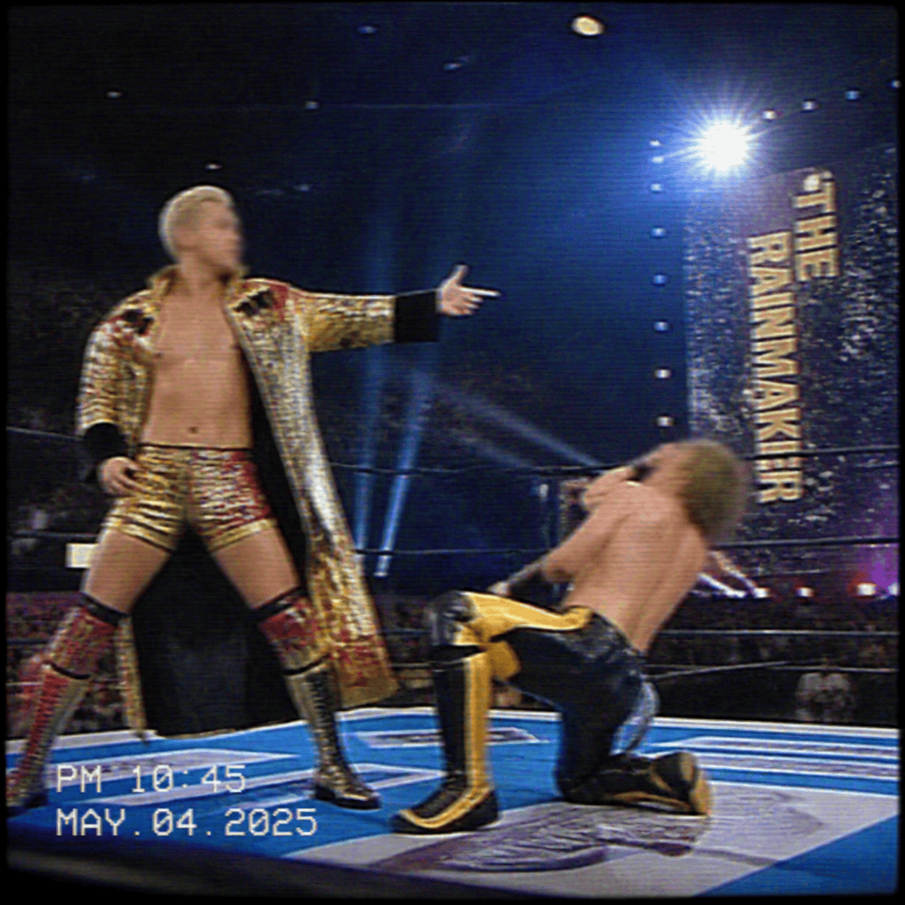

2026/11/14(土)
アベマ・試合結果速報！
○ジュリア (21分14秒 ジャーマン・スープレックス) アルバ・ファイア●
○オースティン・セオリー (15分36秒 エクスプロイダー) タイラー・ベイト●
○パイパー・ニーヴェン (24分58秒 スワンダイブ・フロッグスプラッシュ) アレクサ・ブリス●
○ティファニー・ストラットン (19分11秒 パワーボム) パイパー・ニーヴェン●
○キット・ウィルソン (22分45秒 ジャンピング・ハイキック) エンジェル●
○Garza Jr. (10分27秒 フロッグスプラッシュ) チャド・ゲイブル●
○リア・リプリー (13分09秒 リープフロッグ・セントーン) ナタリア●
○リヴ・モーガン (18分37秒 ストラングルホールド) ミチン●
○アイバー (11分36秒 チョークスラム) デクスター・ルミス●
○ライラ・ヴァルキュリア (17分28秒 アルゼンチン・バックブリーカー) B-ファブ●
○ベイリー (20分05秒 ベイリー・ト ゥ・ベイリー) ASUKA●
○オカダ・カズチカ (25分00秒 レインメーカー) ローガン・ポール●
○飯伏幸太 (19分50秒 ブラディ・サンデー) 獣神サンダーライガー●
○ウルフアロン (12分44秒 スモールパッケージ) ベルト●
○モンテス・フォード (14分59秒 スカイハイ) Dr. Wagner Jr.●
○ASUKA (16分30秒 アスカロック) キアナ・ジェームス●
○タイラー・ベイト (18分22秒 ヘリコプター・スピン) 飯伏幸太●
○YOH (14分15秒 フォアアーム・スマッシュ) チャド・ゲイブル●
Thank you for Watching !

「(オカダ・カズチカ vs ローガン・ポール 25分00秒 レインメーカー)」